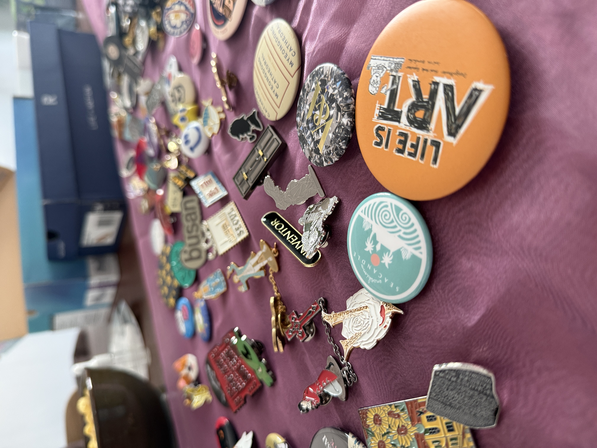
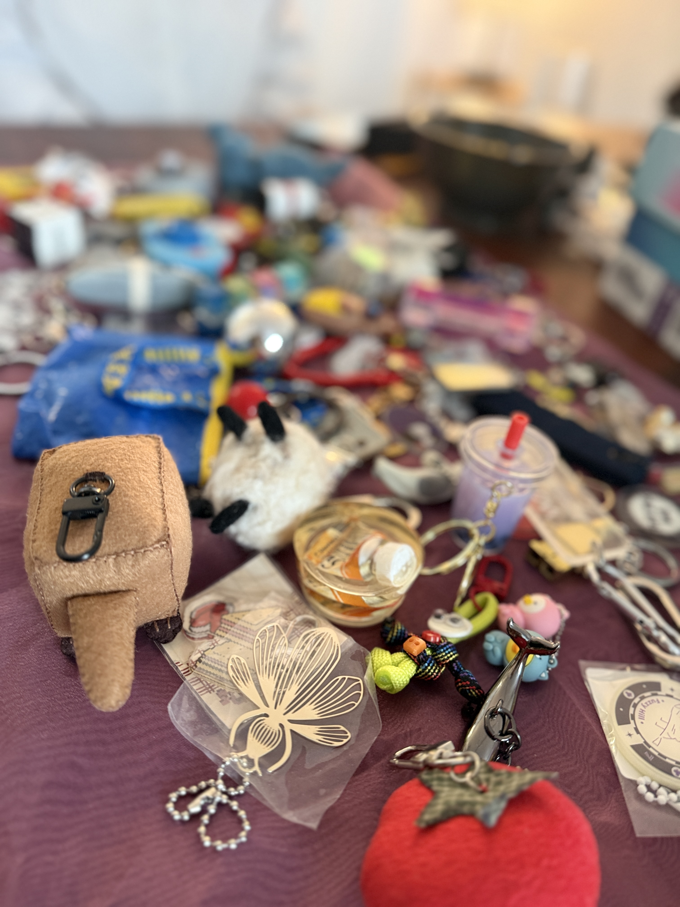
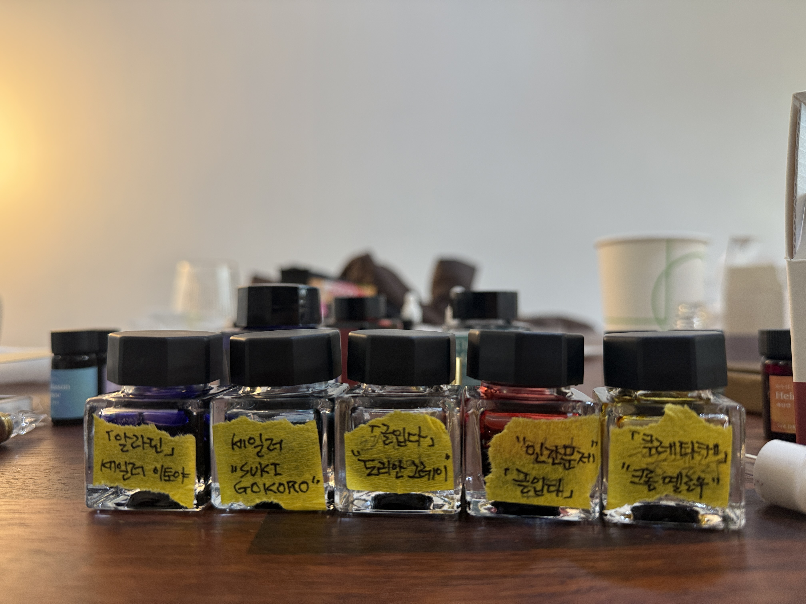
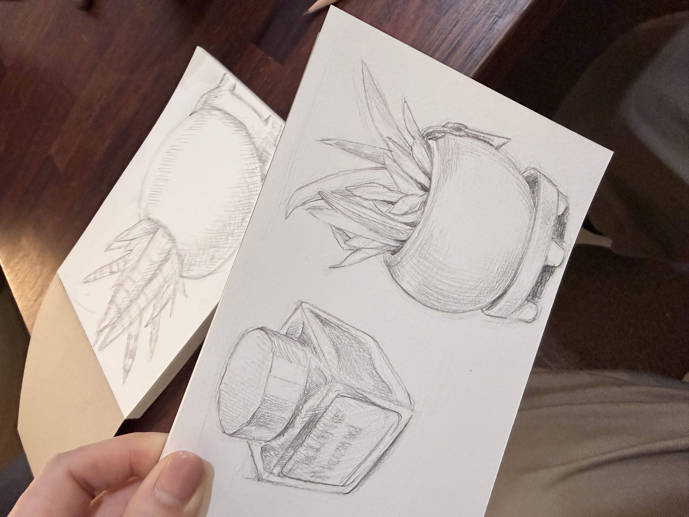

둘이 만드는 이야기 2.

01 / 배지 모음
다이어리는 새로운 곳에 가거나, 새로운 것을 보거나, 새로운 경험을 하면
기억의 열쇠로 배지와 키링을 산다고 해요.

02 / 키링 모음
우와, 정말 많은 배지와 키링을 모았는데 어디에서 득했는지
다 기억하고 있더라고요. 하나하나 소개해 주는
다이어리의 목소리에 반가움과 설렘이 묻어 있어요.
듣고 있으니 그곳에 가서 같은 경험을 해 보고 싶어지네요.

03 / 잉크
오늘은 다이어리가 잉크를 조금씩 나누어 주었어요.
지난번 만남에서 잉크에 입문했는데, 다이어리의 나눔으로 아홉 가지 색의
잉크 부자가 되었어요. 잉크로 쓰는 글이 하나씩 늘어가고 있어요.
다음에는 잉크 그림도 그려 보자고 해서 “끼야~!” 신나요.

04 / 그림
오늘부터 만날 때마다 그림을 한 장씩 그리기로 했어요.
“그림을 잘 그리는 방법은… 계속 그리는 것입니다. 계속 그리게 해 드릴게요.”
ㅎㅎㅎ 아주 대단한 비법이에요.
계속 그리게 해 주는 것만큼 좋은 서포트가 없죠. ㅎㅎㅎ
이 노트가 다 채워질 때쯤 제 그림이 어느 정도로 그려질지 기대돼요.
사진은 다이어리의 그림. 제 그림은 아직 비공개예요. ㅎㅎㅎㅎ